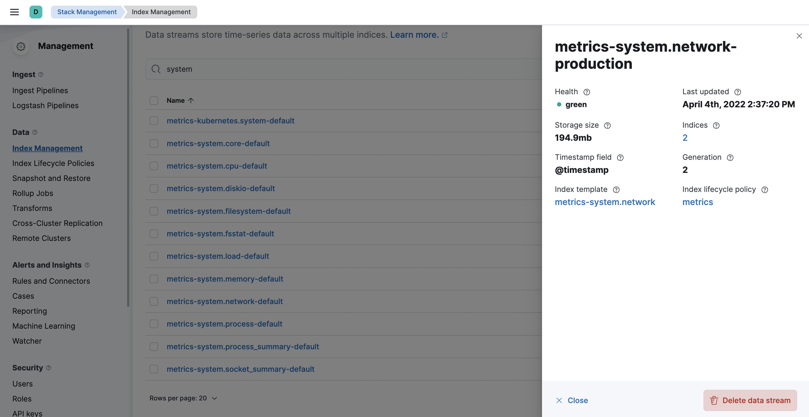

Data streamsedit
Elastic Agent uses data streams to store time series data across multiple indices while giving you a single named resource for requests. Data streams are well-suited for logs, metrics, traces, and other continuously generated data. They offer a host of benefits over other indexing strategies:
- Reduced number of fields per index: Indices only need to store a specific subset of your data–meaning no more indices with hundreds of thousands of fields. This leads to better space efficiency and faster queries. As an added bonus, only relevant fields are shown in Discover.
- More granular data control: For example, file system, load, CPU, network, and process metrics are sent to different indices–each potentially with its own rollover, retention, and security permissions.
- Flexible: Use the custom namespace component to divide and organize data in a way that makes sense to your use case or company.
- Fewer ingest permissions required: Data ingestion only requires permissions to append data.
Data stream naming schemeedit
Elastic Agent uses the Elastic data stream naming scheme to name data streams. The naming scheme splits data into different streams based on the following components:
-
type -
A generic
typedescribing the data, such aslogs,metrics,traces, orsynthetics. -
dataset -
The
datasetis defined by the integration and describes the ingested data and its structure for each index. For example, you might have a dataset for process metrics with a field describing whether the process is running or not, and another dataset for disk I/O metrics with a field describing the number of bytes read. -
namespace -
A user-configurable arbitrary grouping, such as an environment (
dev,prod, orqa), a team, or a strategic business unit. Anamespacecan be up to 100 bytes in length (multibyte characters will count toward this limit faster). Using a namespace makes it easier to search data from a given source by using a matching pattern. You can also use matching patterns to give users access to data when creating user roles.
The naming scheme separates each components with a - character:
<type>-<dataset>-<namespace>
For example, if you’ve set up the Nginx integration with a namespace of prod,
Elastic Agent uses the logs type, nginx.access dataset, and prod namespace to store data in the following data stream:
logs-nginx.access-prod
Alternatively, if you use the APM integration with a namespace of dev,
Elastic Agent stores data in the following data stream:
traces-apm-dev
All data streams, and the pre-built dashboards that they ship with, are viewable on the Fleet Data Streams page:

If you’re familiar with the concept of indices, you can think of each data stream as a separate index in Elasticsearch. Under the hood though, things are a bit more complex. All of the juicy details are available in Elasticsearch Data streams.
Data viewsedit
When searching your data in Kibana, you can use a data view to search across all or some of your data streams.
Index templatesedit
An index template is a way to tell Elasticsearch how to configure an index when it is created. For data streams, the index template configures the stream’s backing indices as they are created.
Elasticsearch provides the following built-in, ECS based templates: logs-*-*, metrics-*-*, and synthetics-*-*.
Elastic Agent integrations can also provide dataset-specific index templates, like logs-nginx.access-*.
These templates are loaded when the integration is installed, and are used to configure the integration’s data streams.
Configure an index lifecycle management (ILM) policyedit
Use the index lifecycle management (ILM) feature in Elasticsearch to manage your Elastic Agent data stream indices as they age. For example, create a new index after a certain period of time, or delete stale indices to enforce data retention standards.
Installed integrations may have one or many associated data streams—each with an associated ILM policy.
By default, these data streams use an ILM policy that matches their data type.
For example, the data stream metrics-system.logs-*,
uses the metrics ILM policy as defined in the metrics-system.logs index template.
Tutorial: Customize data retention for integrationsedit
This tutorial explains how to apply a custom ILM policy to an integration’s data stream.
Scenario: You have Elastic Agents collecting system metrics with the System integration in two environments—one with the namespace development, and one with production.
Goal: Customize the ILM policy for the system.network data stream in the production namespace.
Specifically, apply the built-in 90-days-default ILM policy so that data is deleted after 90 days.
Step 1: View data streamsedit
The Data Streams view in Kibana shows you the data streams, index templates, and ILM policies associated with a given integration.
- Navigate to Stack Management > Index Management > Data Streams.
-
Search for
systemto see all data streams associated with the System integration. -
Select the
metrics-system.network-{namespace}data stream to view its associated index template and ILM policy. As you can see, the data stream follows the Data stream naming scheme and starts with its type,metrics-.
Step 2: Create a component templateedit
For your changes to continue to be applied in future versions,
you must put all custom index settings into a component template.
The component template must follow the data stream naming scheme,
and end with @custom:
<type>-<dataset>-<namespace>@custom
For example, to create custom index settings for the system.network data stream with a namespace of production,
the component template name would be:
metrics-system.network-production@custom
- Navigate to Stack Management > Index Management > Component Templates
- Click Create component template.
-
Use the template above to set the name—in this case,
metrics-system.network-production@custom. Click Next. -
Under Index settings, set the ILM policy name under the
lifecycle.namekey:{ "lifecycle": { "name": "90-days-default" } } -
Continue to Review and ensure your request looks similar to the image below. If it does, click Create component template.

Step 3: Clone and modify the existing index templateedit
Now that you’ve created a component template, you need to create an index template to apply the changes to the correct data stream. The easiest way to do this is to duplicate and modify the integration’s existing index template.
When duplicating the index template, do not change or remove any managed properties. This may result in problems when upgrading.
- Navigate to Stack Management > Index Management > Index Templates.
-
Find the index template you want to clone. The index template will have the
<type>and<dataset>in its name, but not the<namespace>. In this case, it’smetrics-system.network. - Select Actions > Clone.
-
Set the name of the new index template to
metrics-system.network-production. -
Change the index pattern to include a namespace—in this case,
metrics-system.network-production*. This ensures the previously created component template is only applied to theproductionnamespace. -
Set the priority to
250. This ensures that the new index template takes precedence over other index templates that match the index pattern. -
Under Component templates, search for and add the component template created in the previous step.
To ensure your namespace-specific settings are applied over other custom settings,
the new template should be added below the existing
@customtemplate. - Create the index template.

Step 4: Roll over the data stream (optional)edit
To confirm that the data stream is now using the new index template and ILM policy, you can either repeat step one, or navigate to Dev Tools and run the following:
The result should include the following:
{
"data_streams" : [
{
...
"template" : "metrics-system.network-production",
"ilm_policy" : "90-days-default",
...
}
]
}
|
The name of the custom index template created in step three |
|
|
The name of the ILM policy applied to the new component template in step two |
New ILM policies only take effect when new indices are created, so you either must wait for a rollover to occur (usually after 30 days or when the index size reaches 50 GB), or force a rollover using the Elasticsearch rollover API:
POST /metrics-system.network-production/_rollover/